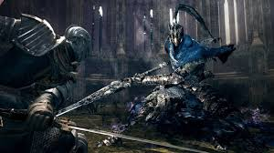
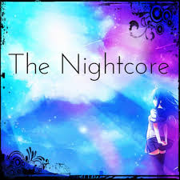

ゲームは１９８３年に発売されたファミコンから今までの３０年以上の時を経て急速に進化をしている。RPG、アクション、シミュレーション、シューティング、恋愛など種類に事欠かない。ARやVRなどというものまで用いたゲームも存在している。

night coreは元々はノルウェーの二人の学生DJのDJチーム「night core」が、学校の課題として原曲のテンポ・ピッチを上げたリミックス・トラックCDを制作したことが発祥とされている。２０００年代中程からDJチーム「night core」以外の人々が制作した楽曲が音楽ジャンル・night coreの楽曲としてYouTubeなどにアップロードされ、音楽ジャンルとして確立していった。